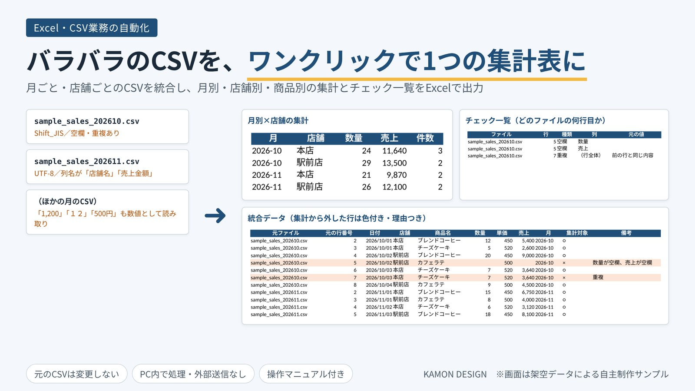
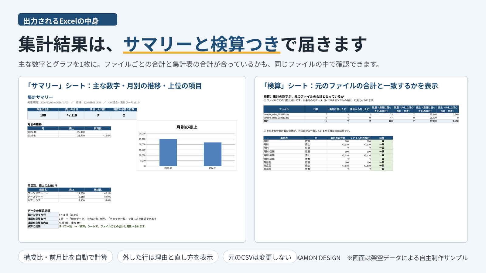

01
形式の違うCSVを、そのまま読む。
Excelで保存したCSV（Shift_JIS）もUTF-8のCSVも自動で判別。「店舗名」と「店舗」のように列名が違うファイルも、1つの表にそろえます。
月ごと・店舗ごとに出力されるCSVを、毎回コピーして貼り合わせる作業。フォルダにCSVを入れて実行するだけで、統合した表と、月別・店舗別・商品別の集計をExcelで出力するツールをつくりました。主な数字をまとめた「サマリー」と、合計が合っているかを確かめる「検算」のシートも一緒に出力します。お客さまのCSVに合わせて設定し、お渡しします。


集計に入れてはいけない行を見つけて、理由・場所・直し方を一覧にします。集計表の合計が、ファイルごとの合計と一致するかも、同じExcelの中で確認できます。
01
Excelで保存したCSV（Shift_JIS）もUTF-8のCSVも自動で判別。「店舗名」と「店舗」のように列名が違うファイルも、1つの表にそろえます。
02
「どのファイルの何行目か」と直し方をチェック一覧に出力。集計から外した行は色を付け、理由を表示します。「1,200」「500円」などの表記は数値として読み取ります。
03
合計・月別の推移とグラフ・上位の項目・構成比・前月比を1枚に。「検算」では、ファイルごとの行数と合計を出し、集計表の合計と一致するかを表示します。お手元の元データと見比べられます。
04
元のCSVは書き換えません。結果は日時入りのExcelで毎回新しく保存し、前回の結果を上書きしません。お客さまのパソコンの中だけで動き、データを外部へ送信しません。
確認はサンプルデータによるものです。「検算」は、集計表から行が漏れていないことを確かめるもので、元のCSVに入力された値そのものの正しさは、お客さまの元データと見比べてご確認いただきます。見出しの前に説明の行があるCSVと、タブ区切りのファイルは、標準では対応していません（カスタムでご相談ください）。ご利用にはPython（無料）のインストールが必要です。手順はマニュアルでご案内します。
すべて税込。契約前に、範囲・総額・納品物を確認します。値引きではなく、範囲で調整します。
¥30,000
素材の受け取りから5営業日が目安
¥50,000
7営業日が目安
¥70,000〜
納期はご相談
対応は平日夜と土日です。ご連絡には平日19時以降と土日にお返事します。